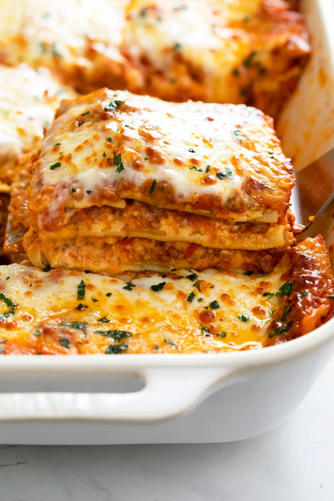

The Best Lasagna

The Best Dang Lasagna Ever
This Lasagna Recipe is easy to make with a creamy ricotta cheese mixture,
savory meat sauce, and mozzarella cheese. BONUS: it’s make-ahead and freezer-friendly!
Ingredients
Cheese Filling
- 15 oz. ricotta cheese, 2 cups
- 1 large egg
- 2 cups mozzarella cheese
- ¾ cup Parmesan cheese, freshly grated
- 2 teaspoons Italian seasoning
- ½ teaspoon salt
- ¼ tsp pepper
Meat Sauce
- 1 tablespoon olive oil
- 1 yellow onion, finely diced
- ¾ lb. ground beef
- ¾ lb. ground Italian sausage
- 3 cloves garlic
- ½ cup chicken broth
- 40 oz. marinara sauce, see notes
- 1 tablespoon tomato paste
- 1 teaspoon hot sauce
- 1 teaspoon Worcestershire sauce
Lasagna
- 12 lasagna noodles, plus extra in case of breakage
- 2.5 cups mozzarella cheese
Steps
Equipment
- 1 9 x 13-inch casserole dish
Prep
- Combine the cheese filling ingredients in a medium bowl and set aside. Measure out remaining ingredients.
Meat Sauce
- Heat olive oil over medium heat and add the diced onions. Let them soften
for 10 minutes. (This allows them to release a little sugar which is a nice offset to
the acidity of the tomatoes.)
- Add the ground beef and sausage and increase heat to medium-high. Use a
spatula to break up the meat so that it’s very fine and crumbled. Cook for 8-10 minutes,
or until cooked through. Add garlic during the last minute.
Drain excess grease.
- Add the chicken broth and use a silicone spatula to “clean” the bottom
and sides of the pot. Add the marinara sauce, tomato paste, hot sauce, and Worcestershire
sauce. Bring to a boil, then reduce to a simmer. Cover partially
and let the sauce simmer gently.
Preheat Oven and Cook the Lasagna Noodles
- Preheat oven to 375°.
- Begin boiling a large pot of salted pasta water for the lasagna noodles.
Once a rapid boil is reached, cook the noodles to al dente according to package instructions.
(Set a timer to ensure you don’t overcook them.) Gently stir
with a wooden spoon throughout cooking
to prevent the noodles from sticking.
Drain and rinse with cold water until noodles are completely cool.
- Lay the cooled noodles flat on wax or parchment paper while you begin
assembling the lasagna.
Assemble
- Spread 1 heaping cup of meat sauce on the bottom of a 9 x 13-inch
casserole dish. Next, add 4 lasagna noodles, overlapping them if needed.
- Spread 1/3 of the ricotta cheese mixture over the noodles, followed
by about 1 ½ cups of meat sauce.
- Top with 4 more lasagna noodles, 1/3 of the ricotta cheese mixture,
1 ½ cups meat sauce.
- Finish with 4 more lasagna noodles, the rest of the ricotta mixture,
and the rest of the meat sauce.
- Top with 2 ½ cups of Mozzarella cheese.
- Spray foil with nonstick cooking spray and place it spray-side-down on top of the baking dish to prevent the cheese from sticking to it.
Bake
- Bake for 35 minutes. Remove cover and bake for 10 more minutes.
- Remove and garnish with fresh parsley. Let it sit for 15 minutes prior
to serving to allow the layers to set. Serve with garlic bread with cheese.